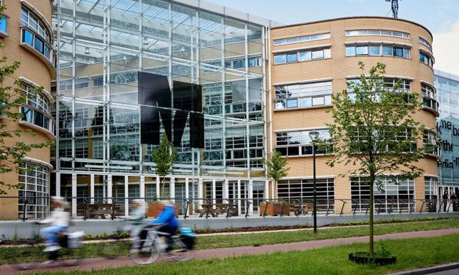
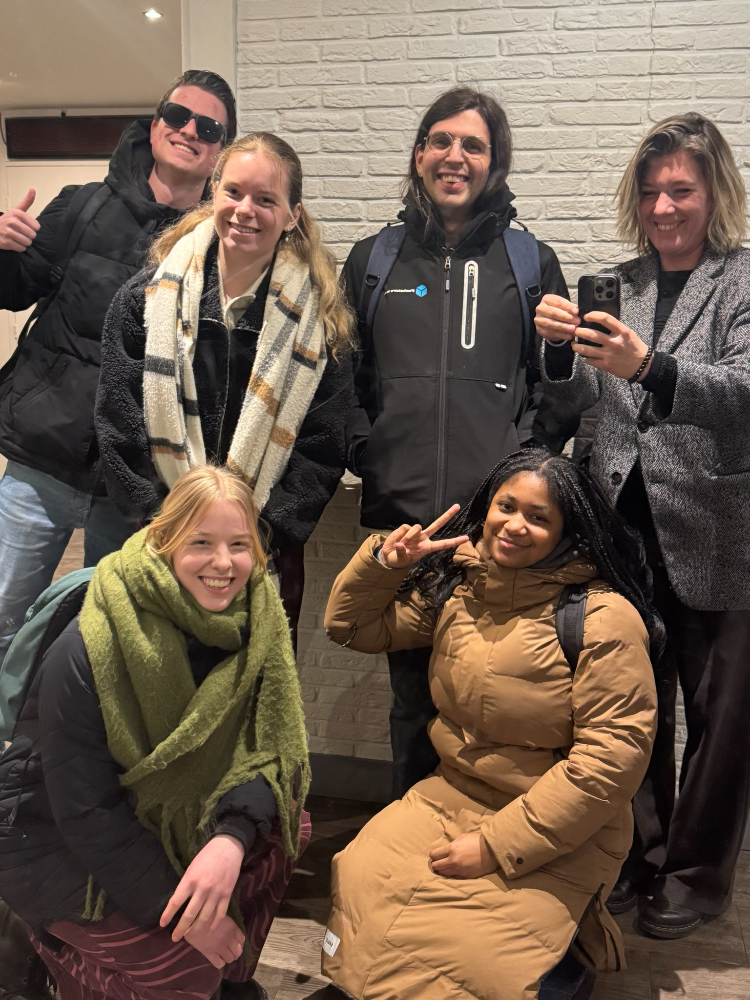

ABOUT THE INTERNSHIP
Van september 2025 tot januari 2026 liep ik stage bij KRO-NCRV in Hilversum. Dit was mijn eerste ervaring binnen een grote omroeporganisatie en gaf mij waardevolle inzichten in de wereld van televisieproductie. Ik werkte voornamelijk met Adobe Premiere Pro, Photoshop en After Effects, waarmee ik bouwde op de vaardigheden die ik tijdens mijn opleiding had ontwikkeld.
Tijdens deze stage kreeg ik meer inzicht in het maken van verschillende soorten shortform social media content met het aangeleverde materiaal en het werken met strakke deadlines. Daarnaast leerde ik samen te werken met verschillende mensen binnen een organisatie en was dit mijn eerste echte stap in het werken voor een groter bedrijf.
Deze stage bevestigde mijn passie voor editen en storytelling. Door samen te werken met ervaren professionals leerde ik het belang van nauwkeurigheid, samenwerking en flexibiliteit. Het gaf mij daarnaast het vertrouwen om meer verantwoordelijkheid te nemen en op mijn creatieve keuzes te vertrouwen.
